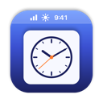

MenuWidgets
A world clock, weather, reminders, new mail and Claude usage in the macOS menu bar.
MenuWidgets is a small, open-source Mac app. It adds a few items to the menu bar, each opening a panel when clicked. It runs entirely on your Mac: there is no MenuWidgets server or account.
Source, install steps and settings: github.com/ianneub/mac-menu-widgets.
Gmail
The Mail widget can sign in to Google to show how many unread emails are in your
Gmail inbox, with each one's sender, subject and a short snippet, and to post a
notification when one arrives. It asks only for read-only access to email metadata
(gmail.metadata). It can't read message bodies or attachments, and it
can't send, change or delete anything.
See the privacy policy.